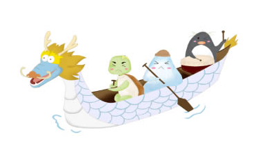

端午节
自古以来端午节便有划龙舟及食粽等节日活动。自2008年起，端午节被列为国家法定节假日。
2006年5月，国务院将其列入首批国家级非物质文化遗产名录；2009年9月，联合国教科文组织正式审议并批准中国端午节列入世界非物质文化遗产，
成为中国首个入选世界非遗的节日。
关于
三亚讲举办端午节系列活动 龙舟赛、美...
海口美兰区举办端午节中华经典诵...
端午节端午节五黄是什么 为什么吃五黄...
“童聚大路 粽情端午”大路镇粽子..
划桨敲鼓！阿森纳众讲赛龙舟庆端午...
登录
民间活动
龙舟竞渡,龙船竞渡前，先要请龙、祭神。如广东龙舟，在端午前要从水下起出，祭过在南海神庙中的南海神后，安上龙头、龙尾，再准备竞渡。并且买一对纸制小公鸡置龙船上，认为可保佑船平安（隐隐可与古代鸟舟相对应）。闽、台则往妈祖庙祭拜。有的直接在河边祭龙头，杀鸡滴血于龙头之上，如四川、贵州等个别地区。
而湖南汨罗县，竞渡前必先往屈子祠朝庙，将龙头供在词中神翁祭拜，披红布于龙头上，再安龙头于船上竞渡，既拜龙神，又纪念屈原。
各种祭祀、纪念之仪式，无非是点香烛，烧纸钱，供以鸡、米、肉、供果、粽子等。如今这些含有迷信色彩朗仪式已很少见，但在过去，人们祭祀龙神庙时气氛很严肃，多祈求农业丰收、风调雨顺、去邪祟、攘灾异、事事如意，也保佑划船平安。用人们的话说，“图个吉利”，表达人们内心良好的愿望。
在正式竞渡开始时，气氛十分热烈。

近代的龙舟比赛也大抵相同，不过规程稍严格一些。近年来，国内外都出现了国际龙舟比赛，吸引了各国健儿。除了比赛速度外，划龙舟还有其他一些活动。比如龙舟游乡，是在龙舟竞渡时划着龙舟到附近熟悉的村庄游玩、集会。有时龙舟还有各种花样的划法，具有表演的含义。也有的是游船式竞渡。有夜龙舟，又有旱龙舟，是在陆地上进行的模拟龙船比赛的活动。另外，还应说一下女龙船。在过去，许多地方的龙舟竞渡均不许妇女参加，认为妇女接触龙舟很不吉利。如今各地都出现了女子龙舟队，英姿讽爽的女人们奋勇争光，争夺第一，丝毫不弱于须眉男儿。